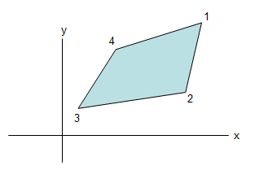

Area of a polygon (Coordinate Geometry)
First, number the vertices in order, going either clockwise or counter-clockwise, starting at any vertex.

The area is then given by the formula
Where xn is the x coordinate of vertex n,
yn is the y coordinate of the nth vertex etc.
The vertical bars mean you should make the reult positive even if it calculates out as negative.
Notice that the in the last term, the expression wraps around back to the first vertex again.
Try it here
Adjust the quadrilateral ABCD by dragging any vertex. The area is calculated using this method as you drag. A detailed explanation
follows the diagram.
The above diagram shows how to do this manually.
-
Make a table with the x,y coordinates of each vertex. Start at any vertex and go around the polygon in either direction.
Add the starting vertex again at the end. You should get a table that looks like the leftmost gray box in the figure above.
-
Combine the first two rows by:
- Multiplying the first row x by the second row y. (red)
- Multiplying the first row y by the second row x (blue)
- Subtract the second product form the first.
-
Repeat this for rows 2 and 3, then rows 3 and 4 and so on.
-
Add these results, make it positive if required, and divide by two.
Area calculator
See Polygon area calculator for a pre-programmed calculator that does the arithmetic for you.
Just enter the coordinates.
Limitations
 This method will produce the wrong answer for self-intersecting polygons,
where one side crosses over another, as shown on the right.
It will work correctly however for
triangles,
regular
and
irregular polygons,
convex
or
concave polygons.
This method will produce the wrong answer for self-intersecting polygons,
where one side crosses over another, as shown on the right.
It will work correctly however for
triangles,
regular
and
irregular polygons,
convex
or
concave polygons.
Things to try
In the above diagram, press 'reset' and 'hide details', then try the following:
- Drag the vertices of the polygon to create a new shape.
(Do not create a 'crossed' polygon, this method does not work on those.)
- Calculate the area using this method.
- Click on 'show details' to check your answer.
Other Coordinate Geometry topics
(C) 2011 Copyright Math Open Reference.
All rights reserved